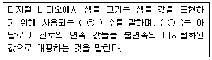
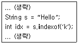
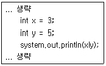
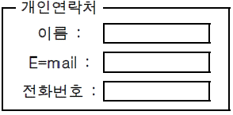
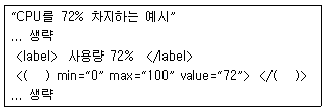
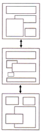
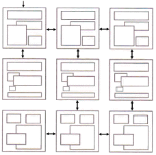
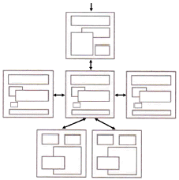
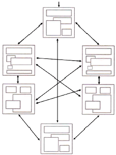

멀티미디어콘텐츠제작전문가(구) (2014-03-02 기출문제)
1과목: 멀티미디어개론
1. 화면의 밝기가 변화할 때 화면의 고휘도 부분에서 색이 적절치 않게 재생되는 현상은?
- 휘도 직선
- 색도 비직선
- 미분위상
- 고휘도 비직선
(정답률: 알수없음)

2. Dos(Denial of service) 공격 방법이 아닌 것은?
- 메시지 과잉
- 서비스 과부하
- 접속 방해
- 패킷 필터링
(정답률: 알수없음)
3. 32배속 CD-ROM의 데이터 전송 속도는?
- 150Kbps
- 600Kbps
- 1.2Mbps
- 4.8Mbps
(정답률: 알수없음)
4. 파형 코딩 방법 중 연속된 샘플의 값들 사이의 차이만을 인코딩하고 저장함으로써 압축을 하는 방식으로 ITU-T의 음성 압축 표준인 G.72X의 핵심 기법인 코딩 방법은?
- PM(Phase Modulation)
- PCM(Pulse Code Modulation
- AM(Amplitude Modulation)
- ADPCM(Adaptive Differential Pulse Code Modulation)
(정답률: 73%)
5. EIA의 표준화에서 나온 일반적인 인터페이스 표준으로 컴퓨터 및 대부분의 통신기기에 부착되는 직렬 전송 방식은?
- RS-232C
- ISO1177
- X.27
- V.28
(정답률: 알수없음)
6. “인터넷에 연결된 사람들과 문자로 실시간 대화할 수 있는 서비스 기능으로 최근에는 인터넷폰과 비디오폰이 실용화되면서 음성이나 실시간 영상까지 제공할 수 있다.”로 표현되는 인터넷의 기능은?
- FTP
- IRC
- VR
(정답률: 알수없음)
7. 신뢰성 있는 통신을 위하여 최초 접속 시 3-way handshake를 수행하여 syn, syn＋ack, ack 신호를 통한 정확성 있는 통신에 이용되는 프로토콜은?
- HTTP
- TCP
- UDP
- IP
(정답률: 알수없음)
8. 인터넷에서 네트워크의 관리정보를 교환하는데 사용되는 프로토콜은?
- IGMP(Internet Group Management Protocol)
- ICMP(Internet Control Message Protocol)
- SMTP(Simple Mail Transfer Protocol)
- SMNP(Simple Network Management Protocol)
(정답률: 알수없음)
9. 오디오 콘솔의 기능 중 마이크 입력에서 들어오는 미약한 신호를 증폭하기 위한 기기는?
- pre-amplifier
- post-amplifier
- mid-amplifier
- re-amplifier
(정답률: 알수없음)
10. UNIX에서 파일에 대한 읽기, 쓰기, 실행 접근 권한을 변경하는 명령어는?
- chprv
- chmod
- chass
- chown
(정답률: 알수없음)
11. 지향성 마이크를 음원 가까이에 배치하면 마이크의 낮은 음역 주파수 특성이 상승하는 효과는?
- 회절효과
- 왜곡효과
- 근접효과
- 반사효과
(정답률: 80%)
12. FTP 취약점을 이용하는 공격방법으로 FTP 바운스 공격을 이용하여 어느 저점에서 보내는지 인지할 수 없도록 전자 메일을 보내는 공격방법은?
- Bomb mail
- Fack mail
- Spam mail
- Group mail
(정답률: 알수없음)
13. ITU-T에서 정한 ASCII 전송 제어문자에 대한 설명으로 옳은 것은?
- ACK : 수신된 정보에 대한 부정 응답
- EOT : 전송의 시작 표시
- SYN : 문자 동기의 유지
- STX : 본문의 종료 표시
(정답률: 알수없음)
14. 주파수(Frequency)에 대한 설명으로 틀린 것은?
- 주파수의 단위는 초당 진동 횟수를 의미하는 Hz이다.
- 주파수가 작으면 고음이고, 크면 저음이 된다.
- 단위 시간 내에 몇 개의 주기나 파형이 반복되었는가를 나타내는 수를 말한다.
- 주파수와 주기는 역수 관계에 있다.
(정답률: 알수없음)
15. TCP/IP 프로토콜 계층구조에 속하지 않는 것은?
- 응용계층
- 인터넷계층
- 세션계층
- 전송계층
(정답률: 알수없음)
16. 다음 중 100/200/400Mbps, 800Mbps의 고속 데이터 전송을 지원하며, 최대 63개의 장비를 PC에 연결할 수 있고, PnP 및 Hot-plugging을 지원하며, 터미네이터나 디바이스 ID 설정 등이 불필요하고, 가전제품 등에서도 사용 가능한 외부 입출력 버스 규격으로 옳은 것은?
- E-IDE
- SCSI
- USB
- IEEE1394
(정답률: 알수없음)
17. 스푸핑(spoofing)의 종류가 아닌 것은?
- RPC spoofing
- IP spoofing
- ARP spoofing
- DNS spoofing
(정답률: 알수없음)
18. ( )안에 들어갈 내용으로 알맞은 것은?

- ㉠ 바이트 ㉡ 동기화
- ㉠ 비트 ㉡ 양자화
- ㉠ 프레임 ㉡ 동기화
- ㉠ 프레임 ㉡ 양자화
(정답률: 알수없음)
19. UNIX에서 파일소유자의 식별번호, 파일크기, 파일의 최종 수정 시간, 파일의 링크 수, 파일이 저장된 디스크 블록의 주소 등의 내용을 가지고 있는 것은?
- inode
- super block
- mounting
- boot block
(정답률: 알수없음)
20. 화면 크기가 800×600이고, 픽셀 당 16bit인 한 장의 정지 영상을 저장하는데 필요한 저장 장치의 용량(KByte)은?
- 240KB
- 480KB
- 960KB
- 1920KB
(정답률: 알수없음)
21. 음성을 7비트에서 8비트로 양자화로 부호화 했을 때 설명으로 틀린 것은?
- 표본화 잡음이 반으로 감소된다.
- 압축 특성이 개선된다.
- 양자화 잡음이 감소한다.
- 신장 특성이 개선된다.
(정답률: 알수없음)
22. UDP 프로토콜에 대한 설명으로 틀린 것은?
- 비연결형 전송 프로토콜이다.
- 잘 알려진 포트로는 80(HTTP), 23(FTP) 포트가 있다.
- 전송계층에 속하는 프로토콜이다.
- 흐름제어와 혼잡제어 기능을 갖고 있지 않다.
(정답률: 알수없음)
23. IPTV의 영상신호소스 압축과 전송방식이 바르게 짝지어진 것은?
- 신호압축 : MPEG-4, 전송 : MPEG-4
- 신호압축 : WMV-9, 전송 : MPEG-4
- 신호압축 : H.264, 전송 : MPEG-2
- 신호압축 : MPEG-2, 전송 : MPEG-2
(정답률: 알수없음)
24. 가상사설망(VPN)의 터널링 기술과 관련된 보안 프로토콜이 아닌 것은?
- PPIP
- SMURF
- IPSEC
- SSL
(정답률: 알수없음)
25. 대칭키 암호방식에 근거한 키 분배 알고리즘은?
- PKI
- RSA
- Kerberos
- DSS
(정답률: 알수없음)
2과목: 멀티미디어기획및디자인
26. 점의 정의에 대한 설명으로 옳은 것은?
- 공간을 구성하는 단위이다.
- 면의 한계 또는 면의 교차에 의해 생긴다.
- 크기는 없고 위치를 지닌다.
- 물체가 차지하고 있는 한정된 공간이다.
(정답률: 알수없음)
27. 배색을 구성하는 색채를 계통적으로 조직화한 컬러 스킴(color scheme)에 대한 설명으로 거리가 먼 것은?
- 기조색(Base color) - 배색대상의 이미지나 분위기를 결정하는 중심이 되는 색채
- 보조색(Assort color) - 기조색이나 주조색만으로 대상의 특성을 표현하기 어려운 경우 사용
- 정돈색(Trim color) - 형태나 공간을 짜임새 있게 하기위한 색채로서 틀이나 테두리 등의 프레임 컬러로 사용
- 테마색(Theme color) - 배색 전체를 지배하는 색으로서 이미지를 특징 있게 하며 통일감 부여
(정답률: 알수없음)
28. Dsign의 어원이 라틴어 Designare의 뜻으로 옳은 것은?
- 지시하다.
- 그리다.
- 만들다.
- 상상하다.
(정답률: 알수없음)
29. 물체의 원근감이나 중량감, 실재감을 강하게 느끼게 하는 표현 요소는?
- 선
- 면
- 색상
- 명암
(정답률: 알수없음)
30. 먼셀 색체계의 색상환에서 서로 마주보고 있는 색으로 배색했을 때 볼 수 있는 효과로 옳은 것은?
- 명도대비
- 채도대비
- 보색대비
- 색상대비
(정답률: 알수없음)
31. “셰퍼와 머피느 상과 벌의 경험이 지각에 어떤 영향을 주는 가를 실험하였다. 그 결과 상과 관련된 옆 얼굴은 잘 인식되며 벌과 관련된 옆얼굴은 잘 인식되지 않았다.” 이와 같이 자기에게 유리한 것을 선택해서 지각하려는 현상은?
- 지각의 예민화 현상
- 지각적 방위 현상
- 지각의 강조 현상
- 지각의 상태화 현상
(정답률: 알수없음)
32. 시각의 원리 중 도형과 바탕에 대한 설명으로 틀린 것은?
- 두 개의 영역을 나누는 경계선은 도형으로 된 영역의 윤곽선으로 되어 도형에 속한다.
- 도형은 앞으로 두드러지는 현상이 있어 가까워 보인다.
- 바탕은 표면이 있는 것처럼 보인다.
- 도형은 인상성과 주목성이 강하므로 기억되기 쉽다.
(정답률: 알수없음)
33. 바우하우스의 교육이념과 거리가 먼 것은?
- 새로운 조형의 실험
- 예술과 기술의 결합
- 순수 예술의 추구
- 새로운 재료의 활용
(정답률: 알수없음)
34. 디자인의 분류 중 2차원 디자인이 아닌 것은?
- 텍스타일디자인
- 벽지디자인
- 액세서리디자인
- 포토디자인
(정답률: 알수없음)
35. 게슈탈트 시지각 이론에 해당되지 않는 것은?
- 심미성
- 유사성
- 연속성
- 폐쇄성
(정답률: 알수없음)
36. “저채도의 약한 색은 면적을 넓게, 고채도의 강한 색은 면적을 좁게 해야 균형이 맞는다.”는 원칙을 정량적으로 이론화한 학자는?
- 슈브뢸
- 문-스펜스
- 오스트발트
- 져드
(정답률: 알수없음)
37. 보색대비의 변형에 기초하여 12색상환에서 삼각형, 사각형 등을 그려놓고 2색, 3색, 4색, 5색 그리고 6색 배색의 조화론을 주장한 이론은?
- 져드의 색채조화론
- 요하네스 이텐의 색채조화론
- 비렌의 색채조화론
- 문-스펜스의 색채조화론
(정답률: 알수없음)
38. 빛의 파장 영역 중 색 자극으로 작용하는 380~780㎚의 영역은?
- 반사영역
- 감성영역
- 가시영역
- 단색영역
(정답률: 알수없음)
39. 먼셀(Munsell)의 기본 5색상 기호가 아닌 것은?
- R
- M
- Y
- G
(정답률: 알수없음)
40. 디자인의 요소 중 점에 대한 설명으로 틀린 것은?
- 작을수록 점 같이 보이며, 클수록 면처럼 보인다.
- 크기를 갖지 않고, 위치를 표시한다.
- 위치를 나타내거나 강조, 구분, 계획 등을 나타내는 기능을 가진다.
- 원형으로 표현된다.
(정답률: 알수없음)
41. 컴퓨터에서 사용하는 서체 중 글자의 가로, 세로 끝부분에 짧은 획이 붙어 있는 세리프체가 아닌 것은?
- 바탕체
- 신명조
- 고딕체
- Times New Roman
(정답률: 알수없음)
42. 선의 특징에 대한 설명으로 옳지 않은 것은?
- 직선 - 정적, 경직
- 곡선 - 단순, 명료
- 수평선 - 평화, 안정
- 수직선 - 상승, 긴장
(정답률: 90%)
43. 서로 다른 두 색이 어떤 광원 아래에서 같은 색으로 보이는 현상은?
- 연색성
- 항상성
- 메타메리즘
- 분광반사
(정답률: 알수없음)
44. 사각 법칙에서 '정의잔상' 중 원래의 자극과 같은 밝기이나 보색 잔상이 나타나는 현상은?
- 헤링의 잔상
- 보링의 잔상
- 스윈들의 잔상
- 프로킨예의 잔상
(정답률: 알수없음)
45. 에디토리얼 디자인의 분류와 표현 방법으로 거리가 가장 먼 것은?
- 잡지, 사보, 매뉴얼, 화집, 브로슈어 등은 서적 스타일에 속한다.
- 일간신문, 카달로그, 팜플렛 등은 스프레드 스타일에 속한다.
- 명함, 안내장, 레터헤드, DM 등은 블리드 스타일에 속한다.
- 사진집, 화보, 지도 등은 픽토리얼에 속한다.
(정답률: 알수없음)
46. 먼셀기호 “5R 8/3”이 나타내는 의미로 옳은 것은?
- 색상 5R, 채도 8, 명도 3
- 색상 5R, 명도 8, 채도 3
- 색상 8R, 채도 3, 명도 5
- 색상 8R, 명도 3, 채도 5
(정답률: 알수없음)
47. 피에트 몬드리안이 속하는 미술사조로 개인적인 자의성을 배제한 보편적이고 잡단적인 미학을 지칭하는 것은?
- 구성주의
- 절대주의
- 신조형주의
- 초현실주의
(정답률: 알수없음)
48. 져드(D.B.Judd)의 색채조화론과 거리가 먼 것은?
- 질서의 원리
- 숙지의 원리
- 동류의 원리
- 모호성의 원리
(정답률: 알수없음)
49. 칸딘스키(Kandinsky_가 제시한 형태 연구의 3가지 요소가 아닌 것은?
- 육각형
- 사각형
- 삼각형
- 원형
(정답률: 알수없음)
50. 지역색의 개념을 제시하고 지역색 이미지를 부각시키는데 중요한 역할을 한 사람은?
- 고흐
- 칸딘스키
- 랑크로
- 몬드리안
(정답률: 알수없음)
3과목: 멀티미디어저작
51. 객체지향언어 자바 코드에서 변수 idx에 저장되는 값은?

- -1
- ０
- 6
- null
(정답률: 알수없음)
52. XML에 대한 설명으로 틀린 것은?
- XML은 SGML과 HTML과 같이 사용하면서도 구현하기 쉽고 상호 운용할 수 있도록 고안되었다.
- DOM(Document Object Model)과 SAX(Simple API for XML)로 XML문서를 분석한다.
- namespace는 XML 문서의 유효성을 검사하는데 사용된다.
- 정의할 요소와 속성의 수에 제한이 없고 데이터의 타입과 구조를 정의하며 서로 독립적으로 사용된다.
(정답률: 알수없음)
53. 학생(STUDENT) 테이블에 어떤 학과(DEPT)들이 있는지 검색 하고 결과의 중복을 제거하는 방법으로 맞는 것은?
- SELECT DEPT FROM STUDENT;
- SELECT ALL DEPT FROM STUDENT;
- SELECT * FROM STUDENT WHERE DISTINCT DEPT;
- SELECT DISTINCT DEPT FROM STUDENT;
(정답률: 알수없음)
54. PHP 기본 문법에 대한 설명으로 틀린 것은?
- 조건문을 포함한 PHP의 구문 뒤에는 콜론(:)을 붙인다.
- PHP에서 내용을 출력할 때에는 echo 함수를 사용한다.
- 문자열을 출력할 경우 꼭 큰 따옴표나 작은따옴표를 붙인다.
- 변수명은 대, 소문자를 구분한다.
(정답률: 30%)
55. 자바스크립트에서 Document에 포함된 객체 중 HTML 문서 안에 있는 ＜A NAME＞ 태그에 관한 정보를 배열로 포함하고 있는 객체는?
- Anchor 객체
- Applet 객체
- Link 객체
- Form 객체
(정답률: 알수없음)
56. HTML5에서 지정한 문자로 끝나는 속성에 대해서만 스타일을 적용하는 속성 선택자는?
- $
- ~
- &&
- ##
(정답률: 알수없음)
57. 스키마에 대한 설명으로 틀린 것은?
- 고객정보를 저장한다고 할 때 고객번호, 이름, 주소 등의 구성요소에 해당하는 데이터 구조와 제약조건을 정의한 것이다.
- 외부스키마는 각 사용자가 생각하는 데이터베이스로 논리적인 구조를 정의한 것이다.
- 개념스키마는 관리자의 관점에서 전체 데이터베이스의 논리적인 구조를 정의한 것이다.
- 데이터의 독립성을 위해 스키마 사이의 매핑관계를 허용하지 않는다.
(정답률: 알수없음)
58. 객체지향 패러다임의 구성 요소가 아닌 것은?
- 객체
- 클래스
- 전역변수
- 메소드
(정답률: 알수없음)
59. 객체지향언어 자바에서 아래 코드에 대한 결과 값은?

- 1
- 5
- 7
- 0.6
(정답률: 알수없음)
60. 그림에 표시된 브라우저 결과와 같이 ＜fieldset＞ 태그 내에 사용되며, '개인연락처'와 같이 그룹 범위의 캡션으로 표시할 수 있는 HTML5 태그는?

- ＜input＞
- ＜button＞
- ＜label＞
- ＜legend＞
(정답률: 알수없음)
61. 스타일시트(CSS)에서 텍스트 문자속성에 대한 설명으로 틀린것은?
- text-align : 글자를 정렬
- text-indent : 화면 왼쪽으로 들여쓰기 지정
- letter-spacing : 글자와 글자사이의 간격을 지정
- text-decoration : 소문자나 대문자로 변환
(정답률: 90%)
62. XQyery에서 FLOWER 표현식에 사용되는 질의구문과 관련이 없는 키워드는?
- for
- from
- where
- return
(정답률: 알수없음)
63. 응용프로그램에서 사용될 데이터베이스를 규정하거나 그 정의를 변경할 목적으로 사용되는 데이터 언어는?
- DDL
- DSDL
- DML
- DSL
(정답률: 알수없음)
64. ALTER TABLE 명령문의 기능에 해당하지 않는 것은?
- 새로운 열(column)의 추가
- 기존 열(column)의 이름 변경
- 테이블 이름 변경
- 기존 무결성 조건의 삭제
(정답률: 알수없음)
65. ActionScript 3.0에서 변수에 대한 문법으로 맞는 것은?
- var 3DeltaX:int = 3;
- var ＋dist:int = 4;
- var delete:int = 5;
- var celsi:int = 6;
(정답률: 알수없음)
66. 소프트웨어 설계에서 사용되는 대표적인 추상화 메커니즘으로 틀린 것은?
- 기능 추상화
- 프로토콜 추상화
- 자료 추상화
- 제어 추상화
(정답률: 80%)
67. 데이터베이스의 테이블에서 기본키(Primary Key)로 사용하기에 부적절한 항목은?
- 주민등록번호
- 학번
- 계좌번호
- 제품가격
(정답률: 80%)
68. XML에 대한 설명으로 틀린 것은?
- XML 문서는 반드시 한 개의 최상위 엘리먼트가 있어야 한다.
- 독자적 태그를 직접 만들어 사용이 가능하다.
- 모든 엘리먼트는 시작 태그와 끝 태그가 한 쌍으로 이루어 져야 한다.
- XML은 다른 마크업 언어를 생성할 수 있다.
(정답률: 알수없음)
69. ActionScript 3.0에서데이터 유형에 대한 설명으로 틀린 것은?
- string : 문자열
- Number : 분수가 아닌 값
- int : 정수
- uint : 부호 없는 정수
(정답률: 60%)
70. UML에서 클래스와 객체, 관계를 이용한 정적인 모델링을 표현하는 뷰는?
- Environment Mode View
- ImplementationMode View
- StructuralMode View
- BehavioralMode View
(정답률: 60%)
71. 관계형 데이터 모델에서 기본키를 구성하는 속성들은 반드시 값을 가져야 하며, 널 값이나 중복 값을 가질 수 없다에 해당하는 것은?
- 널 무결성
- 필드 무결성
- 개체 무결성
- 자료 무결성
(정답률: 알수없음)
72. 데이터베이스에서 인덱스에 대한 설명으로 맞는 것은?
- 자주 변경되는 애트리뷰트는 인덱스를 정의할 좋은 후보이다.
- Primary Index에 널 값이 나타날 수 없다.
- Secondary Index에는 고유한 키 값들만 나타날 수 있다.
- 여러 개의 후보키 중에서 기본키로 선정되고 남은 키이다.
(정답률: 20%)
73. 자바 애플릿에 대한 설명으로 틀린 것은?
- 웹 브라우저 상에서 실행되는 자바 애플리케이션을 의미하다.
- 웹페이지에 추가하여 동적 효과나 특수효과를 내기 위해서도 사용된다.
- 컴파일된 바이트 코드는 class라는 확장자를 가진다.
- 하드웨어에는 종속적이지만, 브라우저에는 독립적이다.
(정답률: 알수없음)
74. HTML5에서 ( )에 들어갈 태그로 적절한 것은?

- datalist
- textarea
- option
- meter
(정답률: 알수없음)
75. 웹 구조의 모형 중 틀린 것은?
- 선형 구조

- 나선형 구조

- 계층 구조

- 네트워크 구조

(정답률: 알수없음)
4과목: 멀티미디어제작기술
76. 녹음실에서 영상을 보면서 필요한 음향효과를 직접 신체나 물건 등을 이용하여 제작하는 작업은?
- 배경음(Amblence)
- 신시사이저(Synthesizer)
- A/B TEST
- 폴리(Foley)
(정답률: 알수없음)
77. 지터(Jitter)에 대한 설명으로 옳은 것은?
- 디지털 신호의 전달 과정에서 일어나는 시간축 상의 오차
- 아날로그 파형을 양자화 비트로 표현하면서 발생하는 값의 차이
- 가청 주파수보다 높은 고주파 성분 방생으로 인한 에러
- 사운드에 원래 고주파 성분이었던 울림이 없어지고 저주 파수의 방해음이 발생한 것
(정답률: 알수없음)
78. 캠코더는 광원에 따른 색온도의 차이를 영상에 그대로 반영하기 때문에 색온도에 따라 붉은색이나 푸른색으로 나타난다. 이러한 색 온도의 변화를 맞추기 위해 촬영 전 흰색이 올바르게 표현되도록 기준을 맞추는 작업은?
- 초점(focus)
- 화각(wide/telescope)
- 화이트 밸런스(white balance)
- 조리개(iris)
(정답률: 알수없음)
79. 외부에서 음파를 입력했을 때 출력되는 전기신호의 성질로부터 마이크로폰의 성능을 나타내는 것이 아닌 것은?
- 감도
- 출력 전압 주파수
- 지향성
- 이득
(정답률: 알수없음)
80. 스테레오 시스템에서 두 개의 스피커로 주파수와 음압이 동일한 음을 동시에 재생할 경우, 인간의 귀에는 먼저 도달한 소리만 들리는 현상은?
- 도플러 효과
- 마스킹 효과
- 하스 효과
- 임계 효과
(정답률: 알수없음)
81. 색보정 필터에 대한 설명으로 옳지 않은 것은?
- 광원을 필요한 색온도로 바꾸어 촬영할 수 있다.
- 광원의 색온도를 바꾸지 않고 정확한 컬러를 재생시킬 수 있다.
- 색보정 필터에는 오렌지색 85계열의 필터와 청색 80계열의 필터가 있다.
- 청색 80계열의 필터는 Daylight광을 텅스텐광으로 색온도를 변화시킨다.
(정답률: 알수없음)
82. 피사체를 올려다보는 카메라의 각도를 말하며, 건물의 장엄함이나 신체를 길어 보이게 하는 효과를 주는 카메라 앵글은?
- High Angle
- Eye Angle
- Low Angle
- Oblique Angle
(정답률: 알수없음)
83. 영상의 비월주사(Interlace) 방식에 대한 설명으로 틀린 것은?
- TV에서 주로 사용된다.
- 2필드가 1프레임이 된다.
- 순차주사방식이라고도 한다.
- 순차주사에 비해 화면의 깜박거림이 존재한다.
(정답률: 알수없음)
84. 디지털사운드를 분석하여 인간의 두뇌가 걸러낼 사운드를 미리 잘라내는 방식으로 CD급의 음질을 유지하면서 압축률을 올릴 수 있는 mp3의 압축방식은?
- 비파괴적 압축방식
- 파괴적 압축방식
- 인지 압축방식
- 손실 압축방식
(정답률: 알수없음)
85. 철사 또는 특수 제작된 골격구조 위에서 애니메이션용 점토를 입혀 점토 모델을 만든 후 모델을 조금씩 변형시키면서 변화된 각각의 장면을 한 프레임씩 촬영해서 만들어지는 애니메이션 제작방식은?
- 인형 애니메이션
- 클레이 애니메이션
- 셀 애니메이션
- 픽셀 애니메이션
(정답률: 80%)
86. 영상을 복사하거나 프리미어에서 테이프로 녹화하는 경우와 같이 영상의 이동이 있을 때 기계적인 문제나 소프트웨어의 문제로 인해 중간에 프레임이 빠진 상태로 녹화가 되는 것은?
- 셀 프레임
- 미들 프레임
- 드롭 프레임
- 삭제 프레임
(정답률: 알수없음)
87. 사람의 허리로부터 상반신을 담은 촬영기법은?
- 바스트 샷(Bust Shot)
- 웨이스트 샷(Waist Shot)
- 클로즈업(Close Up)
- 풀 샷(Full Shot)
(정답률: 알수없음)
88. 피사체를 기울어지게 찍는 촬영방식은?
- High Angle
- Low Angle
- Eye level
- Oblique Angle
(정답률: 알수없음)
89. 비, 불, 연기, 폭발 등의 자연 현상들을 시뮬레이션 하기에 좋은 컴퓨터 애니메이션 특수 효과는?
- 모핑(Morphing)
- 로토스코핑(Rotoscoping)
- 절차적 방법(Procedual method)
- 입자 시스템(Particle system)
(정답률: 91%)
90. PC의 출력신호를 방송규격에 알맞게 NTSC 신호로 변환하는 장치는?
- TSC(Television Signal Converter)
- 스캔 컨버터(Scan Converter)
- TBC(Time Base Corrector)
- 동기결합장치
(정답률: 알수없음)
91. 소리의 고저는 높이, 음정, 파동의 진동수 등으로 표현된다. 여기에 사용 되는 단위는?
- Hz
- dBm/w
- %
- W
(정답률: 알수없음)
92. 3차원 질감에서 물이나 유리처럼 투명체가 주위의 환경을 왜곡시키는 정도를 무엇이라고 하는가?
- 스페쿨러(Specular)
- 굴절률(Reflection)
- 투명도(Transparency)
- 발광률(Glow)
(정답률: 84%)
93. 스피커의 특정 주파수 신호를 입력하여 스피커의 정면 축상의 특정 거리에 생기는 출력 음악 레벨은?
- 감도
- 파워
- 임피던스
- 지향
(정답률: 알수없음)
94. 다음 중 엔비디아에서 개발한 포맷 방식으로 DirectX 기반의 텍스쳐 맵을 나타내기 위해 사용되는 이미지 형식은?
- BMP
- GIF
- CDR
- DDS
(정답률: 30%)
95. 3차원 모델링 방법 중 스위핑(Sweeping) 기법에 속하지 않는 것은?
- 사출(Extrusion)
- Z-버퍼(Z-buffer)
- 회전(Revolve)
- 선반(Lathe)
(정답률: 알수없음)
96. 3차원 좌표에서 X, Y, Z축이 의미하는 것을 순서적으로 나열한 것은?
- 폭, 높이, 깊이
- 선, 높이, 면
- 점, 선, 면
- 선, 면, 면적
(정답률: 알수없음)
97. 디지털오디오에서 다이나믹 시그날 프로세스(Dynamic Signal Processor)를 설명한 것으로 옳지 않은 것은?
- 시그날의 다이나믹 범위를 줄여 적절한 상태를 만든다.
- 노이즈의 특성을 낮추고 시스템의 오버로드(Overloads)를 일으킨다.
- 라우드와 소프트레벨간의 변화를 자동으로 조정한다.
- 대표적인 것으로 컴프레서(compress), 리미터와 게이트(limiter & Gate) 등이 있다.
(정답률: 80%)
98. 3D 그래픽에서 객체의 한 지점에서 색을 결정하기 위해 조명등의 직접적인 빛 뿐만 아니라 조명으로부터 반사/굴절되어 온 빛의 그림자까지도 고려한 렌더링 방법은?
- 레이 캐스팅(Ray casting)
- 댑스 맵 쉐도우(Depth map shadow)
- 스캔라인(Scan-line)
- 레이 트레이싱(Ray Tracing)
(정답률: 알수없음)
99. 실내 음향 설계의 목표 중 가장 거리가 먼 것은?
- 방해되는 소음이 없어야 한다.
- 음성은 명료하게 들려야 한다.
- 에코 현상은 가능한 증폭 시키도록 한다.
- 실내 전체에 대한 음압 분포가 균일해야 한다.
(정답률: 알수없음)
100. 초점거리가 50㎜보다 짧으며, 거리를 넓게 찍을 수 있는 렌즈는?
- 표준 렌즈
- 망원 렌즈
- 댑스 렌즈
- 광각 렌즈
(정답률: 84%)